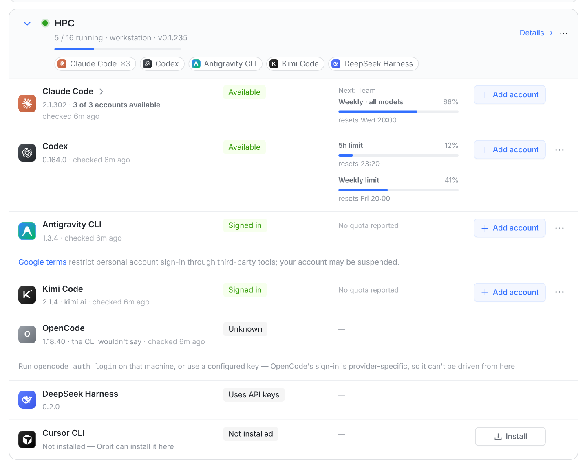
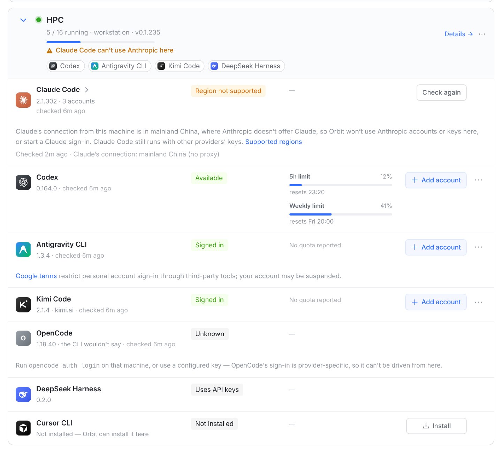
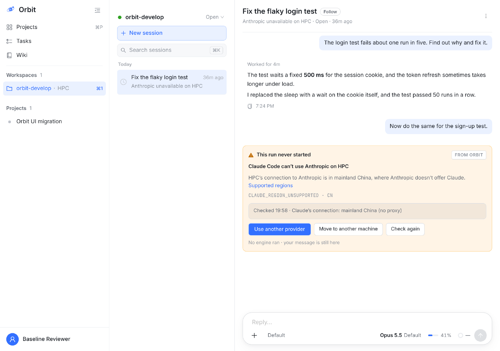
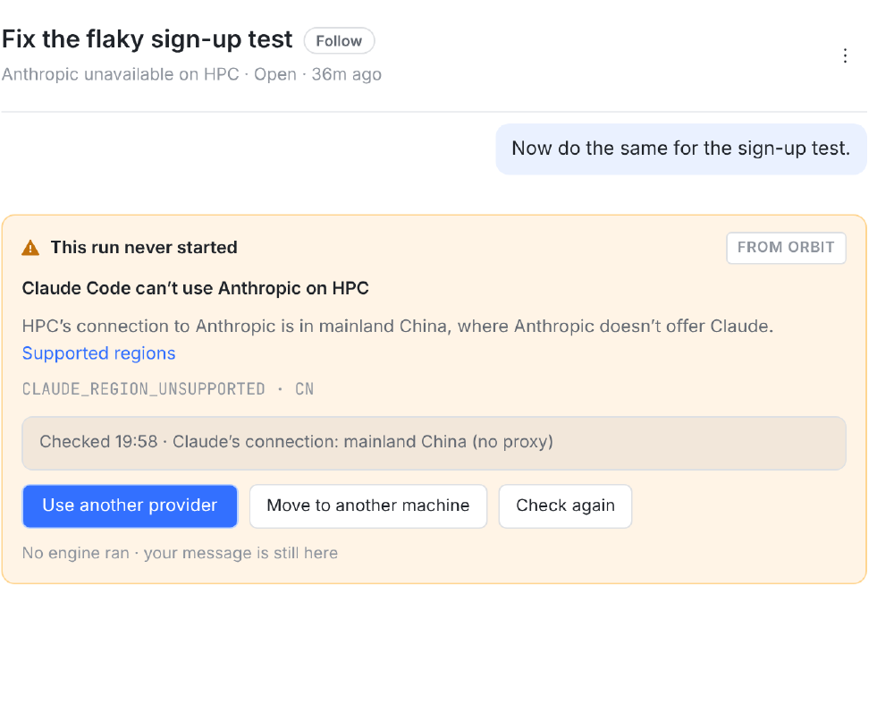
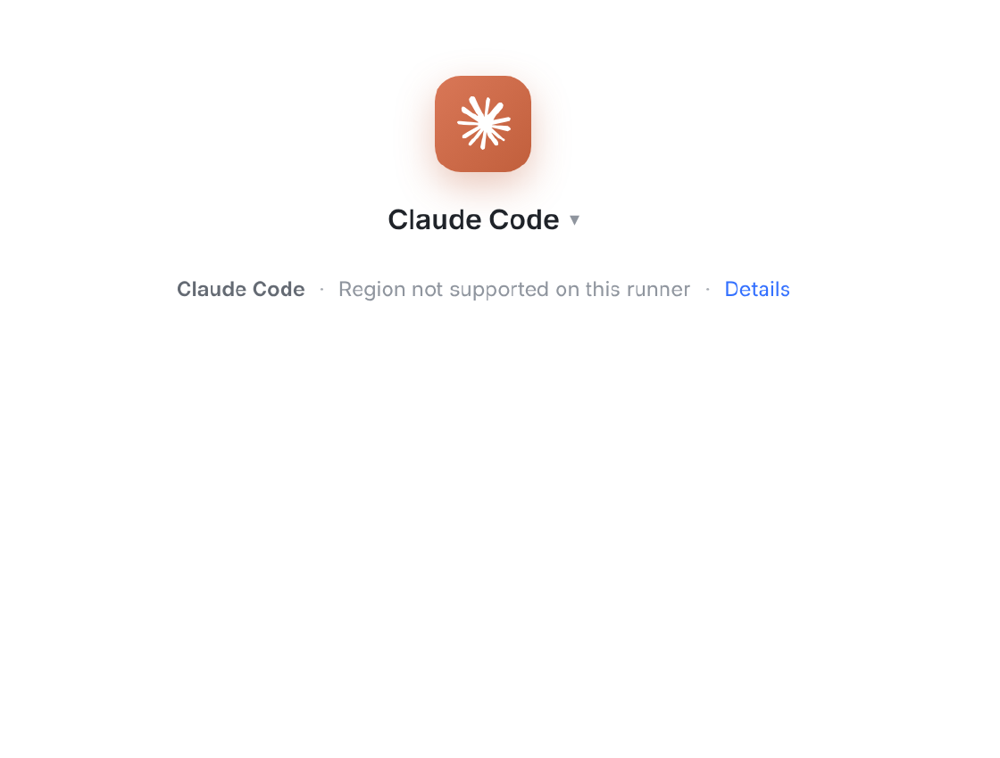
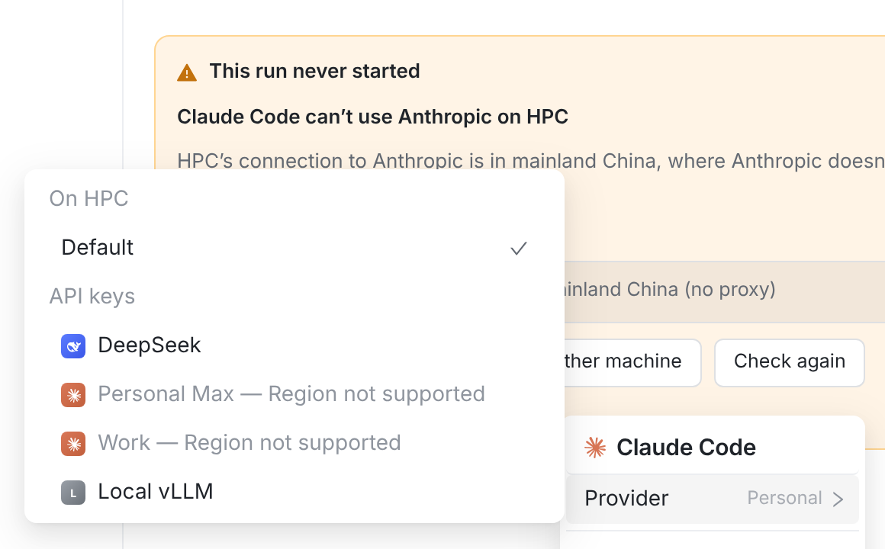

所有者 2026-10-31：「Claude 在执行前判断下网络环境，识别到网络在受限区域需要触发拦截，拒绝执行，避免违反 Claude 的用户协议」。
同日的决定：① 只拦连 Anthropic 的回合 ② 只看 Claude 的出口 ③ 查不到时沿用 24 小时内的结论，没有就按支持 ④ 翻转时停掉 ⑤ 旧 runner 升级前不拦 ⑥ 只做 Claude。本板已按这些决定改过。
一句话方案：runner 在每个连 Anthropic 的 Claude 回合、每次 Claude 登录之前，看 Claude 连 Anthropic 的出口在哪个国家或地区；不在 Anthropic 支持的地区就不启动，并告诉用户为什么、能做什么。
服务端据此不再把这类回合派给这台机器。界面文案全部英文，板上说明是中文。
cf-ipcountry。orbit register --proxy 把代理写进服务环境，并把 Orbit 的域名放进 NO_PROXY：Claude 走代理，runner 连 Orbit 走直连。所以检查请求要显式走 Claude 的代理，不能拿心跳的来源地址代替。ANTHROPIC_BASE_URL 接别家（你的 DeepSeek、Local vLLM key），runner 要按环境判断这一回合连不连 Anthropic。api.anthropic.com/api/oauth/usage，这一路也要停；常驻的 Claude 进程接下一回合不重新 spawn，投递消息时也要拦。api.anthropic.com 时会用的那个代理发一次请求（没配代理就是直连）。代表 Anthropic 看到的地址。GET /api/runner/region-checkCF-IPCountry（乌克兰五地用 cf-region-code 查到州一级），只信经 Cloudflare 进来的请求。session.error；不下发 Claude 登录；建会话返回 409；推送一条。| Claude 的出口 | 这一回合连的是 | 结论 | 说明 |
|---|---|---|---|
| Singapore | 本机 Claude 登录 | ✓ 支持 | 新加坡的 VPS，最常见的情况。 |
| mainland China（直连） | 本机 Claude 登录 | ✗ 不支持 | 今天是 Claude CLI 自己报 403，用户看不懂。 |
| Singapore（经代理；机器在大陆） | 本机 Claude 登录 | ✓ 支持 | 按 ② 只看 Claude 的出口。 |
| mainland China | DeepSeek key | ✓ 不查 | 按 ① 只管连 Anthropic 的回合。 |
| Hong Kong | Anthropic key | ✗ 不支持 | 香港、澳门不在名单上。 |
| Taiwan | 本机 Claude 登录 | ✓ 支持 | 在名单上。 |
| Ukraine · Crimea | 本机 Claude 登录 | ✗ 不支持 | 乌克兰五地除外，靠 cf-region-code 查到州一级。 |
| 查不到 | 本机 Claude 登录 | ? → ✓ | 沿用 24 小时内的结论；没有就按支持（③）。 |
以下都是 main d6f363a6c 的 src/web 跑在 vite 上的真实页面，数据是之前机器页设计板的示例机群。
会话卡、Provider 菜单和新建会话的提示由原型补丁 prototype.patch 渲染；机器页、列表行和标题是在真实页面上改字和改 class，样式全是页面自己的。
示例：HPC 的网络在中国大陆，Claude 没走代理；这台机器上有 3 个 Claude 账号，还有 DeepSeek 和 Local vLLM 两把能给 Claude Code 用的 key。

今天 Claude Code 写 Available，3 个账号照常排队拿活，用量也照常去 Anthropic 读。页面上看不出任何问题。

1 2 3 4 5Claude Code can’t use Anthropic here，和“Claude signed out”同一种（runnerAttention 新增一种）。机器页的 Needs attention 和 iPhone 同一条。Region not supported（橙色，和 Signed out、Not supported here 同色）。3 个账号的登录不动，换到别的机器或重查通过，立刻能用。额度列写 —：受限时不读 Anthropic 的用量。Supported regions 链接；第二行是检查时间和 Claude 的出口，写明走没走代理。写法照 Antigravity 那一行的 Google 条款提示。
1 1 2 3 4 5Anthropic unavailable on HPC，不再是“Waiting for slot”（今天被挂起的会话都显示成在等空位），上方也不出现“Working for 1m”。RunNeverStartedCard，新增原因 REGION_UNSUPPORTED）。why 是 Claude Code can’t use Anthropic on HPC；正文是服务端写进 session.error 的那句话，后面跟 Supported regions。CLAUDE_REGION_UNSUPPORTED · CN，下面是检查时间和 Claude 的出口。Use another provider（主按钮，打开输入框的 Provider 菜单，见 C 右）。会话建好后引擎就固定了，换不了引擎，但可以换成 DeepSeek / Local vLLM 这类 key，仍是 Claude Code。另外两个：Move to another machine（现成的 Move…）、Check again（重查，通过就自动开跑）。

1
2 3 4Claude Code · Region not supported on this runner · Details，“Fix it”换成 “Details”。这台机器有 DeepSeek / vLLM key，所以引擎列表里 Claude Code 不灰；一把别家的 key 都没有时，那一行才灰掉写 Region not supported。— Region not supported，不带 “fix it →”：这个问题在页面上修不了。
iPhone 是画的：会话页照 SessionRunStartCardView（输入框上方、橙色底的那张卡）的结构；机器页用 ../antigravity-accounts/kit.*（照 RunnerEngineRow 量的）。
Mac 是同一套 SwiftUI 页面；Android 跟 iOS。终端复刻 orbit doctor 现在的输出格式。
SessionRunStartCardView 的按钮是一行 HStack，三个放不下，实现时改成能折行）。标题下的状态词和 web 一样。Region not supported（橙色），胶囊是 Check Again（代替 Sign In）；分组脚注写原因和 Claude 的出口。账号页里没有 Add Account。orbit doctor 多一段 Claude region，Claude 那一行写 Anthropic: region not supported；交互模式下不再提议给 Claude 登录。orbit status 不动。CLAUDE_REGION_UNSUPPORTED；接 DeepSeek 的回合写 not checked。| 什么时候 | 做什么 | 结果 |
|---|---|---|
| runner 启动、每 5 分钟、点 Check again | 走 Claude 的代理发一次检查，服务端判定 | 服务端把结论记在 runner.region 上并回给 runner，runner 自己也缓存一份；不走心跳 |
| 每个连 Anthropic 的 Claude 回合开始前 | 新进程：在 runSessionProcess 装引擎之前查；已在跑的进程：投递消息前查。用 60 秒内的结论，更旧就当场查（3 秒内） | 支持 → 照常；不支持 → 不启动 / 不投递，回报 CLAUDE_REGION_UNSUPPORTED: …，服务端把这次运行放回队列挂起（不算失败）；查不到 → ③ |
| 怎么算“连 Anthropic” | ANTHROPIC_BASE_URL 为空或是 anthropic.com（依次看会话 env、CLAUDE_CONFIG_DIR/settings.json 的 env、进程 env），且没开 Bedrock / Vertex | 本机 Claude 登录、Anthropic key、Claude 池算；DeepSeek、Moonshot、vLLM 等不算，照常跑 |
| Claude 登录、加 Claude 账号 | runner 起 claude auth login 之前查；服务端看结论 | 不支持 → 服务端不下发登录请求，runner 也拒绝（giveUp 带同一句话） |
| 读 Claude 用量 | 每次读之前看结论 | 不支持 → 不读；机器页额度写 — |
| 支持 → 不支持（翻转） | 60 秒后复查 | 连续两次 → 停掉这台机器上正在跑的、连 Anthropic 的 Claude 回合（④），推送一条 |
| 服务端派活 | claim 时看 runner 的结论（和 DSH 不可用同一个挂起机制） | 只挂起连 Anthropic 的 Claude 会话；换 provider、移机器、重查通过任一发生，自动继续 |
| 新建会话 | 和“引擎没登录”的预检同一处 | Anthropic 凭据 + 不支持的机器 → 409；界面上这些凭据本来就灰了 |
| 没升级的旧 runner | 它不上报结论 | 不拦（⑤），按支持 |
| 问题 | 定了 | 意味着 |
|---|---|---|
| ① 哪些回合要拦 | B · 只拦连到 Anthropic 的回合 | 本机 Claude 登录、Anthropic key、Claude 池要查；Claude Code 接 DeepSeek / vLLM 的照常跑。所以会话卡的主按钮是 Use another provider，Provider 菜单只灰掉 Anthropic 的凭据 |
| ② 走代理怎么算 | B · 只看 Claude 的出口 | 每次只发一个检查请求，走 Claude 的代理；配了代理、出口在支持地区就放行 |
| ③ 查不到 | 沿用 24 小时内的结论；没有就按支持 | 检查失败不会停工；没有 Cloudflare 的自建部署等于不拦；“Region unchecked”这类文案不需要了 |
| ④ 跑到一半翻转 | A · 停掉 | 连续两次判定后停，推送一条 |
| ⑤ 没升级的旧 runner | B · 升级前不拦 | 服务端不按心跳来源地区兜底，link-gateway 也不用改 |
| ⑥ 其他引擎 | A · 只做 Claude | — |
| 位置 | 文案 |
|---|---|
| 会话卡 why | Claude Code can’t use Anthropic on {machine} |
| 会话卡正文 | {machine}’s connection to Anthropic is in {region}, where Anthropic doesn’t offer Claude. Supported regions |
| 会话卡机器原话 | CLAUDE_REGION_UNSUPPORTED · {CC} Checked {time} · Claude’s connection: {region} (no proxy | through a proxy) |
| 会话卡按钮 | Use another provider · Move to another machine · Check again |
| 列表行 / 标题 | Anthropic unavailable on {machine} |
| 回合被停（④） | Claude Code stopped on {machine}: its connection to Anthropic is now in {region}, where Anthropic doesn’t offer Claude. |
| 机器页提醒行 / 徽标 | Claude Code can’t use Anthropic here · Region not supported |
| 机器页说明 | Claude’s connection from this machine is in {region}, where Anthropic doesn’t offer Claude, so Orbit won’t use Anthropic accounts or keys here, or start a Claude sign-in. Claude Code still runs with other providers’ keys. |
| Provider 菜单 / 新建会话 | {credential} — Region not supported Claude Code · Region not supported on this runner · Details |
| 建会话 409 | Claude Code can’t use Anthropic on {machine}: its connection is in {region}, where Anthropic doesn’t offer Claude. Pick a key from another provider, or a workspace on another machine. |
| 登录被拒 | Claude sign-in isn’t available on {machine}: its connection to Anthropic is in {region}, where Anthropic doesn’t offer Claude. |
| 推送（翻转） | Claude Code can’t use Anthropic on {machine} — its connection is now in {region}. Sessions on Anthropic accounts or keys there wait until you switch provider or move them. |
RunnerRegion DTO、能力串 claude-region/v1（dto.ts，Go 测试会对照）、“这个凭据连不连 Anthropic”的判断（服务端和 web 共用）。claude_region.go（走 Claude 访问 api.anthropic.com 时的代理发一次检查；60 秒 / 24 小时两档缓存；挂在引擎体检的 5 分钟循环上）；“连不连 Anthropic”的判断（会话 env、settings.json 的 env、进程 env、Bedrock / Vertex）；四个闸口：session.go 的 runSessionProcess（装引擎之前）、收件箱投递（failUndeliveredTurn）、login.go 起登录前、planusage.go 读用量前；翻转时停回合；doctor.go 一段。GET /api/runner/region-check（只走 HTTP，不受 runner-link-required 限制；只信经 Cloudflare 进来的 CF-IPCountry / cf-region-code，不内置 GeoIP）；runner.region 新列（迁移号先查撞号，进各项普查）；Check again（POST /api/runners/:id/region-check，经心跳响应下发给 runner）；claim 挂起（queue.service.ts 的 pausedPendingSessions）；建会话预检（sessions.service.ts）；登录下发（runners.service.ts）；推送（push.service.ts）。RunNeverStartedCard + WorkspaceView（新原因、三个按钮）、sessionProviderChoices（Anthropic 凭据带 Region not supported）、NewSessionProviderHero（Details）、Provider 菜单（不带 fix it）、RunnerEngines（徽标、说明、Check again）、runnerAttention（新一种，cases.json 和 Swift 共用）、列表与标题的状态词。SessionRunStart、RunnerPageFormat / RunnerPageCopy、RunnerAttention、Provider 菜单；Android 同步。来源：anthropic.com/supported-countries · anthropic.com/legal/commercial-terms（D.2、M.8）· code.claude.com/docs/en/legal-and-compliance · anthropic.com/news/updating-restrictions-of-sales-to-unsupported-regions（2025-09-05）。抄录于 2026-10-31。